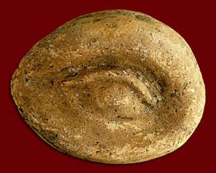

Terracotta model of an eye
This miniature model of an eye would have been offered to a god by someone suffering from an eye complaint. People would buy models of body parts when they wanted a god to cure them, or if they wanted to express their thanks for healing received. |